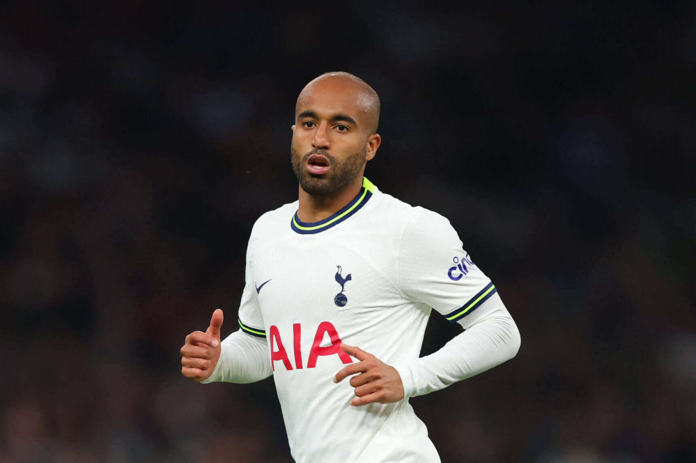

Lucas
Nickname: Cas
I love buttered lobster
I like seafood more than others, probably because my mom is way better at cooking than others, as well as my grandma, or my mom’s mom, always cooks our family the best seafood out there when we visit her during holidays. Out of all those seafoods, such as crabs, oysters, shrimps, etc, I like lobsters the most, especially buttered lobsters my mom cooks on special occasions. I think the first time she made one was on my birthday years ago. The first time I tasted it, it was wonderful. When I bite into it, the butter coating gives a sweet taste, but as my teeth digs deeper into the lobster, the warm juice could be felt too. Ever since then, this has been my favorite seafood.
My Name
I moved to the U.S. when I was around 6, 7th grade from Korea. I did already have an English name Louis, but most people did not pronounce the s at the end when they said my name, as Louis was more like a French name (Louis XIV), and it was pronounced Loui in French. Therefore, I decided to get a new name for myself. I was a fan of Tottenham Hotspur FC at the time, and I think it was around that time when their player Lucas Moura scored a hattrick in the Champions League Semi-Final. I was so impressed by this performance that I decided to name myself after him. To this day, this is one of my decisions that I don’t regret.

Video games
Like most boys, I have loved playing video games in my life. From what I remember, I started my video game career with Minecraft in kindergarten. It was really fun, as this was my first ever experience with video games. I loved building structures, and I also loved adventuring within the game toward the goal of killing the ender dragon. Then, I would play many kinds of mobile games on my mom’s Ipad until fourth grade, when I was introduced to this mobile fps game by my friends. I became addicted to the game, and kept playing on and on. I quit gaming for a while in 6th grade, but resumed playing the same fps game hours every day in 7th grade. Few years later, I got my first gaming PC, so I started playing games on it. The experience was so much better on bigger screen with way better graphics on the PC.